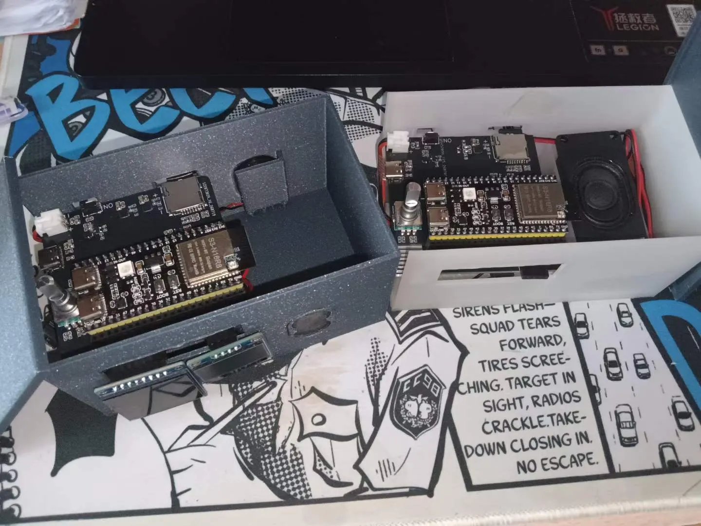

返回硬件项目索引
返回硬件项目索引桌面音乐盒
阅读项目文档 ↓这是一款以《紫罗兰永恒花园》中的薇尔莉特为主题的DIY音乐盒，将音乐、角色动画与实体旋钮操作融为一体。作品以ESP32-S3开发板为核心，自主设计外围PCB，集成SD卡存储、数字D类功放、供电控制及屏幕接口，完成软硬件整合。系统可读取并解码SD卡中的MP3、FLAC音乐，通过扬声器播放；TFT彩屏经SPI通信循环呈现薇尔莉特GIF动画，OLED屏幕则显示曲目、音量、进度及播放模式，并提供黑胶唱片与动态波形两种界面。用户通过旋转、单击、连击和长按旋钮完成调音、选曲及模式切换，也可在局域网网页中点歌、暂停、上传歌曲或边传边播。PCB上的角色线稿与主题网页呼应作品风格，让它成为兼具电子制作探索与情感表达的桌面音乐装置。



项目文档
项目介绍
项目介绍
项目简介
该项目的灵感来源于一首我很喜欢听的纯音乐（《寂静的冬夜》），当时就想着自己做一个播放器，能够随时随地地播放自己喜欢的音乐，后续经过一代代迭代下来，最终形成了两个版本（左为version2双声道彩屏，右为version2单声道单屏）
音乐盒将音乐信息存储在SD卡中，使用esp32s3为开发板进行实时解码，通过一个旋转编码器实现复杂的复合操作，如上下切歌，调整音量，切换模式，切换UI，甚至部署网页进行实时控制，远程烧写等（下图为网页端界面）
元件具体选型是esp32s3（N16R8）开发板，数字功放芯片MAX98357A，功率电子开关，SD卡座，TFT彩屏，OLED小屏，5V2A锂电池，单/双声道扬声器
项目成长
从面包板模块化搭建跑通代码，再到集成到一块PCB板精炼空间，到最后有了双声道彩屏，有了网页端，有了外壳，这个项目经历了数次迭代更新，可以说是一个在不断尝试添加新东西进去的逐渐成长型项目。
在迭代过程中，我如果有想到有趣的创新点或者看到有趣的功能，都会尝试加进这个音乐盒项目里，过程中少不了和AI的交流，讨论功能的具体实现方式，然后尝试动手加进去；碰到如噪声过大，无法正常播放人声歌曲等BUG，暂时无法找到问题根源的我仍坚持优化这个项目，后来在一个巧合下偶然发现并解决了这一系列bug（阻抗匹配），在实践中逐渐提升了解决问题的能力。
AI使用情况
AI工具在这个项目中帮助了我很多，尤其是软件嵌入式的部分，它用过硬的软件编码技术帮助我规避了很多坑，以及碰到硬件上不懂怎么解决的bug，我也会积极和AI交流，解决问题。
交流与心得
经过开发这一个项目，我学会了很多嵌入式的相关技术，以及有关声学以及硬件功放的相关知识，更重要的是我体会到了自己从头到尾开发一个项目的快感，那是和借鉴开源学习完全不一样的体验，需要自己去规划，去选型，去解决问题，去提升作品，去为自己的作品负责，我希望今后能始终带着这份初心和热忱，继续在自己所喜爱的领域尽情创造。